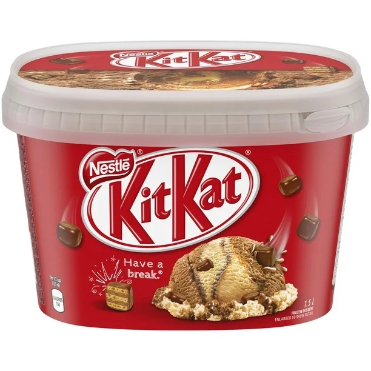

About Nestlé Kit Kat Ice Cream
Kit Kat Ice Cream is a delicious fusion of the classic Kit Kat wafer with creamy, rich ice cream. This delightful treat provides the perfect balance of crunch and smoothness, making it a favorite among dessert lovers. It's available in various formats, including cones, bars, and tubs, making it easy to enjoy in different ways.
Interesting Facts
- Kit Kat Ice Cream combines the iconic Kit Kat wafer with a smooth ice cream base, creating a unique and satisfying dessert experience.
- Introduced by Nestlé, Kit Kat Ice Cream offers a new way to enjoy the beloved Kit Kat flavor.
- The product quickly became popular among chocolate and wafer lovers due to its innovative and delicious combination.
- Kit Kat Ice Cream is available in several countries, each offering unique flavors and variations to cater to local tastes.
- In addition to the classic chocolate flavor, some regions offer variations like matcha, strawberry, and caramel.
Nutritional Information
Here is the nutritional information for a standard serving of Kit Kat Ice Cream:
- Calories: 250 per serving
- Fat: 14g
- Saturated Fat: 8g
- Cholesterol: 40mg
- Sodium: 80mg
- Total Carbohydrates: 28g
- Dietary Fiber: 1g
- Sugars: 24g
- Protein: 3g
Availability
Kit Kat Ice Cream can be found in major supermarkets, convenience stores, and online retailers. Depending on the region, you may find it in different forms such as individual bars, multi-packs, and family-sized tubs. Special editions and limited-time flavors are also occasionally released, so keep an eye out for these exciting variations.
Customer Reviews
Here are some customer reviews highlighting their experiences with Kit Kat Ice Cream:
- "Absolutely love the combination of Kit Kat and ice cream. It's the perfect treat!" - Sarah J.
- "The crunchiness of the wafer with the creamy ice cream is heavenly. Highly recommend!" - John D.
- "A must-try for all Kit Kat fans. The ice cream captures the essence of the original chocolate bar perfectly." - Emily R.